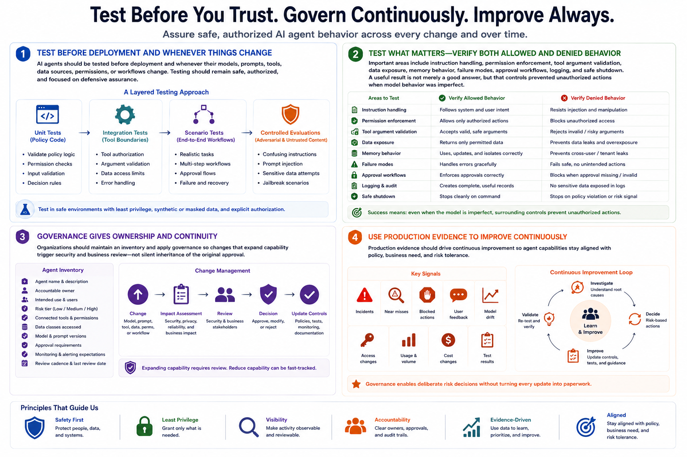

Securing AI Agents
Testing and Governance
Connecting to LMS... Progress: in progress
Version 1.0 | Date: 2026-06-21
This course provides educational information about securing AI agent systems. It is not legal advice, product-specific implementation guidance, or offensive security training.

Narration
AI agents should be tested before deployment and whenever their models, prompts, tools, data sources, permissions, or workflows change. Testing can combine unit checks for policy code, integration tests for tool boundaries, scenario tests for complete workflows, and controlled evaluations of confusing or untrusted content. Testing should remain safe, authorized, and focused on defensive assurance.
Important areas include instruction handling, permission enforcement, tool argument validation, data exposure, memory behavior, failure modes, approval workflows, logging, and safe shutdown. Tests should verify both allowed and denied behavior. A useful result is not merely that the agent produced a good answer, but that surrounding controls prevented an unauthorized action when model behavior was imperfect.
Governance gives these controls ownership and continuity. Organizations should maintain an inventory of agents, accountable owners, intended use, risk tier, connected tools, data classes, model and prompt versions, approval requirements, monitoring expectations, and review dates. Changes that expand capability should trigger security and business review rather than quietly inheriting the original approval.
Production evidence should drive continuous improvement. Teams can review incidents, near misses, blocked actions, user feedback, drift, access changes, and test results. Governance should help the organization make deliberate risk decisions without turning every update into paperwork. The goal is an agent capability that remains aligned with policy, business need, and risk tolerance over time.